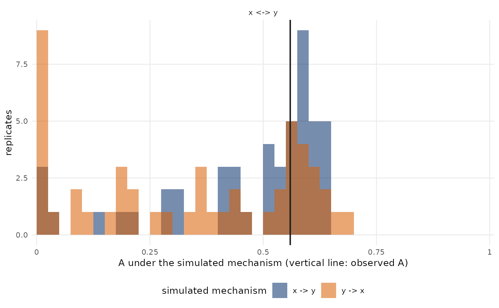

![[Experimental]](figures/lifecycle-experimental.svg)
The asymmetry index A of a pair varies a great deal from sample to
sample, and it is not zero for a straight line: a straight line in one
direction gives a curved conditional mean in the other whenever the
predictor is not Gaussian, and noise lets either smooth bend.
janusplot_reference() measures how large A gets from those sources
alone. For each pair and each direction it simulates the fitted smooth
of that direction with additive noise, keeping the observed predictor,
the adjustment and the residual distribution, refits both directional
smooths as janusplot_fit() did, and records A.
Arguments
- fit
A
janusplot_fitobject fromjanusplot_fit().- x, y
Variable names of the pairs to reference: two equal-length character vectors, element
iofxpaired with elementiofy; or a two-column data frame inxwithymissing, as forjanusplot_pair().NULLfor both (the default) takes every pair of the fit.- B
Positive integer, the number of replicates per mechanism;
99Lby default. Use 499 or more for a reported p-value.- seed
Integer seed for the replicates, or
NULL(the default) to draw from the current random-number stream. With a seed, the stream in the calling session is restored afterwards.- parallel
Logical.
TRUEruns the replicates throughfuture.applyunder the current future plan;FALSE(the default) runs them sequentially.- ...
Ignored.
Value
A data frame of class janusplot_reference with one row per
pair and mechanism: var_x, var_y (the pair), mechanism
("var_x -> var_y" or "var_y -> var_x"), n_used, A (the
observed index), A_ref_median, A_ref_q95 (the median and 95th
percentile of A*), p_value and B_ok (replicates that fitted).
The replicate values are kept in the attribute "draws". print()
adds a one-line reading per pair; plot() draws the reference
distributions with the observed A marked.
Details
For the mechanism x -> y, the cell y ~ s(x) (with the fit's
adjust terms) is refitted to the pair's rows. Each replicate draws
y* = fitted + e*, with e* resampled from that fit's centred
residuals, and keeps x and the adjustment covariates as observed.
Both directional smooths, y* ~ s(x) and x ~ s(y*), are then fitted
with the engine, method, basis and basis dimension of the original
cells, and A* is computed from their EDFs. The mechanism y -> x
swaps the roles. When the fitted smooth is a straight line, the
mechanism is a straight line with additive noise.
p_value is the share of replicates with A* at least the observed
A, computed as (1 + #{A* >= A}) / (1 + B_ok). A large value says
that the smooth of that direction, with additive noise of constant
spread and these marginals, readily gives an A this large: the index
adds nothing to the two fitted smooths. A small value under both
mechanisms says neither direction with additive noise reproduces the
asymmetry, as with a spread that changes along the predictor. Neither
result identifies a causal direction. A_ref_q95 shows how large A
gets by chance at this sample size.
The reference needs the Gaussian family with the identity link. It
resamples residuals, so the simulated responses are continuous; for a
variable with many tied values (see tie_ratio in summary()) the
reference is approximate. Each pair costs 4 * B + 2 model fits, so
the function is meant for a few chosen pairs; parallel = TRUE
spreads the replicates over a future plan.
See also
janusplot_fit() for the index, janusplot_direction() for a
residual-independence test of the direction of a pair.
Other smooth-associations:
janusplot(),
janusplot_compare(),
janusplot_curves(),
janusplot_direction(),
janusplot_fit(),
janusplot_pair(),
janusplot_style(),
plot.janusplot_compare(),
plot.janusplot_fit()
Examples
# \donttest{
# A straight line with a uniform predictor: the reverse smooth bends,
# so A is well above zero, and the reference shows the line explains it.
set.seed(1L)
x <- runif(200L, -2, 2)
d <- data.frame(x = x, y = x + rnorm(200L, sd = 0.4))
fit <- janusplot_fit(d, engine = "gam")
ref <- janusplot_reference(fit, B = 49L, seed = 2L)
#> ℹ Fitting 196 reference models (1 pair, B = 49 per direction).
ref
#> janusplot reference for A: 1 pair, B = 49 per mechanism
#> var_x var_y mechanism A A_ref_median A_ref_q95 p_value
#> x y x -> y 0.56 0.543 0.629 0.46
#> x y y -> x 0.56 0.366 0.632 0.34
#> x <-> y: A = 0.56 is within what the smooth x -> y with additive noise gives (p = 0.46).
plot(ref)

# }